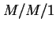
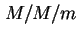
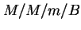
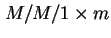
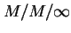
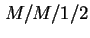

Next:
.
Contents
Index
ชุดเอกสารประกอบการสอน
วิศวกรรมคอมพิวเตอร์
เอกสารประกอบการสอน
การประเมินประสิทธิภาพ
ของระบบคอมพิวเตอร์
Version 1.1
ดร. วรา วราวิทย์
ภาควิชาวิศวกรรมไฟฟ้า คณะวิศวกรรมศาสตร์
สถาบันเทคโนโลยีพระจอมเกล้าพระนครเหนือ
.
Contents
List of Figures
List of Tables
การประเมินประสิทธิภาพระบบคอมพิวเตอร์
เป้าประสงค์
กล่าวนำ
จุดประสงค์ของวิชานี้
ข้อผิดพลาดในการประเมินประสิทธิภาพ
วิธีการการประเมินประสิทธิภาพอย่างเป็นระบบ
กิจกรรม
หัวข้อสรุป
งานมอบหมาย
การเลือกเทคนิคการประเมิน และตัววัดประสิทธิภาพ
เป้าประสงค์
หัวข้อสำคัญในครั้งก่อน
กล่าวนำ
การเลือกเทคนิคการประเมินประสิทธิภาพ
การเลือกตัววัดประสิทธิภาพ
กิจกรรม
กรณีศึกษา: การควบคุมความคับคั่งในเครือข่ายคอมพิวเตอร์
ตัววัดประสิทธิภาพพื้นฐาน
เวลาตอบสนอง
อัตราความสำเร็จ
ความสามารถในการบริการของระบบ
การพิจารณาตัววัดประสิทธิภาพ
หัวข้อสรุป
งานมอบหมาย
ทฤษฎีคิว
เป้าประสงค์
หัวข้อสำคัญในครั้งก่อน
กล่าวนำ
สัญลักษณ์ของคิว
กฎของคิว
กฎของ Little
ชนิดของกระบวนการสโตคาสติก
กิจกรรม
หัวข้อสรุป
งานมอบหมาย
กระบวนการเกิด-ดับ และระบบคิว 
เป้าประสงค์
หัวข้อสำคัญในครั้งก่อน
กล่าวนำ
กระบวนการเกิด-ดับ
ทฤษฎีความน่าจะเป็นคงตัวของสถานะ
แถวคอย
การวิเคราะห์ระบบคิว
ตัวอย่าง คิว
หัวข้อสรุป
งานมอบหมาย
ระบบคิว  และ 
เป้าประสงค์
หัวข้อสำคัญในครั้งก่อน
กล่าวนำ
ระบบคิว
ตัวอย่าง: การประยุกต์
ตัวอย่าง: การประยุกต์ จากการเปลี่ยนแปลงระบบ
ตัวอย่าง: เปรียบเทียบ กับ 
ระบบคิว 
ระบบคิว
ตัวอย่าง: 
หัวข้อสรุป
งานมอบหมาย
เครือข่ายคิว
เป้าประสงค์
หัวข้อสำคัญในครั้งก่อน
กล่าวนำ
ระบบเครือข่ายคิวเปิด และระบบเครือข่ายคิวปิด
เครือข่ายคิวแบบ Product Form
ระบบเครือข่ายคิวสำหรับจำลองระบบคอมพิวเตอร์
หัวข้อสรุป
งานมอบหมาย
กฎของการใชังาน
เป้าประสงค์
หัวข้อสำคัญในครั้งก่อน
กล่าวนำ
กฎภาระงาน (Utilization Law)
กฎการไหลต่อเนื่องของงาน (Forced Flow Law)
กฎของ Little
กฎเวลาตอบสนองทั่วไป (General Response Time Law)
กฎเวลาตอบสนองที่มีการปฏิสัมพันธ์กับผู้ใช้งาน (Interactive Response Time Law)
การวิเคราะห์คอขวด (Bottleneck Analysis)
หัวข้อสรุป
งานมอบหมาย
การวิเคราะห์ค่าเฉลี่ย (Mean Value Analysis)
เป้าประสงค์
หัวข้อสำคัญในครั้งก่อน
กล่าวนำ
การวิเคราะห์ระบบคิวแบบเปิด
ตัวอย่าง
การวิเคราะห์ค่าเฉลี่ย
หัวข้อสรุป
งานมอบหมาย
พื้นฐานระบบที่คงทนต่อความเสียหาย
เป้าประสงค์
หัวข้อสำคัญในครั้งก่อน
กล่าวนำ
ตัววัดประสิทธิภาพของระบบที่คงทนต่อความเสียหาย
งานประยุกต์ของระบบที่คงทนต่อความเสียหาย
การประยุกต์ใช้ในระบบที่มีอายุการใช้งานยาว (Long-Life Applications)
การประยุกต์ใชัในระบบคำนวณที่มีความสำคัญ (Critical-Computation Applications)
การประยุกต์ใช้ในระบบที่ต้องการยืดเวลาการซ่อมบำรุง (Maintenance Postponement Applications)
การประยุกต์ใช้ในระบบที่มีความสามารถในการคงการบริการสูง (High Availability Applications)
ความเสียหาย, ความผิดพลาด, และความล้มเหลวของระบบ
สาเหตุของความเสียหาย
แนวทางการออกแบบระบบที่ทนทานต่อการเสียหาย
ระบบที่คงทนต่อความเสียหาย
ระบบ Triple Modular Redundancy
ระบบ N Modular Redundancy
ระบบตรวจสอบความเสียหาย
ระบบสำรองพร้อมทำงาน
ระบบคงทนต่อความเสียหายแบบอื่นๆ
กิจกรรม
หัวข้อสรุป
งานมอบหมาย
การประเมินค่าความน่าเชื่อถือเชิงปริมาณ
เป้าประสงค์
หัวข้อสำคัญในครั้งก่อน
กล่าวนำ
การประเมินเชิงปริมาณ
อัตราการเสียหาย และฟังก์ชั่นความน่าเชื่อถือ
เวลาเฉลี่ยก่อนการเสียหาย (MTTF)
เวลาเฉลี่ยในการซ่อมแซม (MTTR)
เวลาเฉลี่ยระหว่างการเสียหาย (MTBF)
การคุ้มครองจากการเสียหาย (Fault Coverage)
การหาค่าความน่าเชื่อถือโดยการจำลองแบบแจกแจงการทำงาน
ระบบอนุกรม
ระบบขนาน
ระบบ ใน
หัวข้อสรุป
งานมอบหมาย
ตัวอย่างการวิเคราะห์ความน่าเชื่อถือ และการคุ้มครองจากความเสียหาย
เป้าประสงค์
หัวข้อสำคัญในครั้งก่อน
สรุปสูตรการคำนวณความน่าเชื่อถือของระบบ โดยวิธีการแจกแจง
ตัวอย่าง: การคำนวณค่าความน่าเชื่อถือของระบบอนุกรม
ตัวอย่าง: การคำนวณค่าความน่าเชื่อถือของระบบขนาน
การคุ้มครองจากการเสียหาย
หัวข้อสรุป
งานมอบหมาย
แบบจำลองมาร์คอฟ
เป้าประสงค์
หัวข้อสำคัญในครั้งก่อน
กล่าวนำ
แบบจำลองมาร์คอฟของระบบ TMR
แบบจำลองมาร์คอฟที่คำนึงถึงผลกระทบจากความคุ้มครองจากความเสียหาย
แบบจำลองความปลอดภัย
หัวข้อสรุป
งานมอบหมาย
แบบจำลองมาร์คอฟ (ต่อ)
เป้าประสงค์
หัวข้อสำคัญในครั้งก่อน
การเปรียบเทียบค่าความน่าเชื่อถือระหว่างระบบเดี่ยว กับระบบ TMR
แบบจำลองความสามารถในการคงการบริการ
แบบจำลองความสามารถในการบำรุงรักษา
หัวข้อสรุป
งานมอบหมาย
Index
About this document ...
Vara Varavithya 2002-03-09